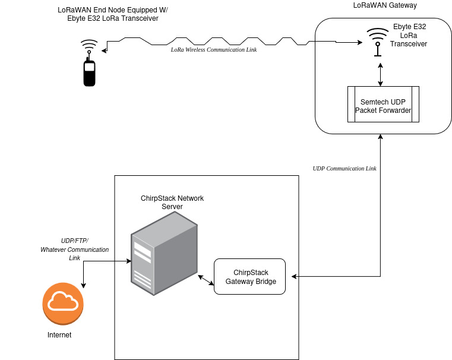
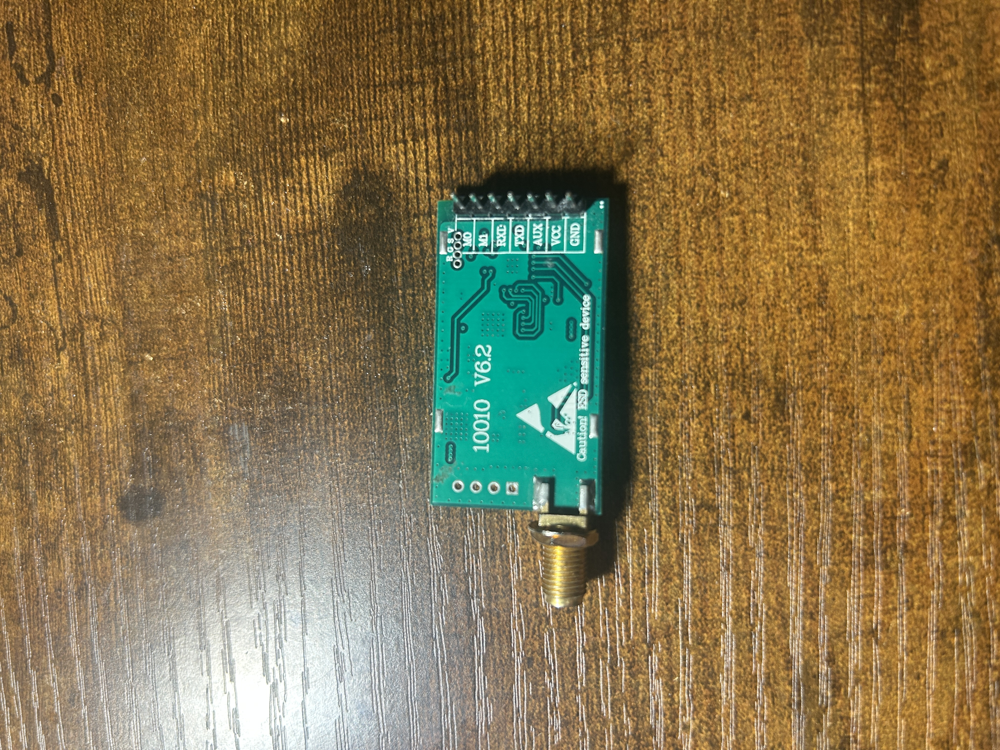
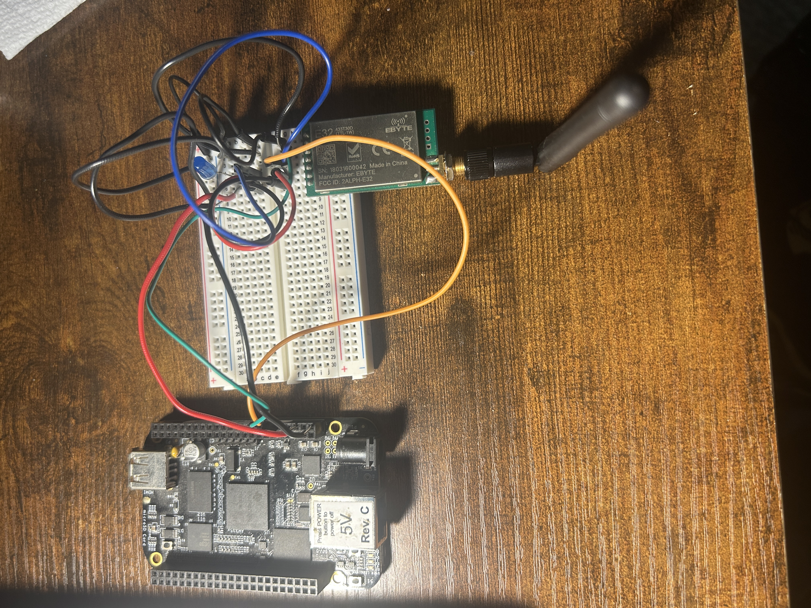
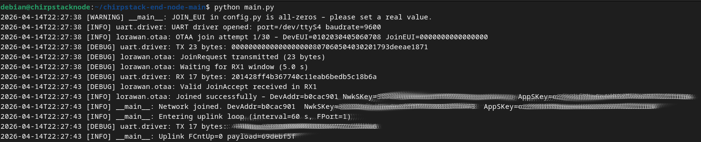
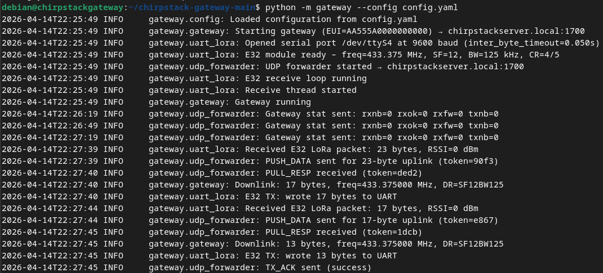
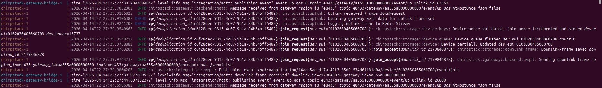

Last updated: April 2026
OverviewI completed this project as part of my reserach on implementing asymetric post quantam encryption algorithm in LoRaWAN to replace the standard OTAA join process. If you found this page because you are just trying to get a normal LoRaWAN setup running, you're in the right place! I know that there's very little accesible "How-To" guides on getting LoRaWAN setup, so I'm providing this project description in hopes that some might benefit. DescriptionThis project implements a functional LoRaWAN network using ChirpStack with custom-built hardware based on BeagleBone Black and Ebyte E32 LoRa modules. The system includes both an end device and a single-channel gateway communicating over UART, with backend infrastructure handling packet forwarding, network management, and application-layer processing. This project serves as a practical guide for setting up a minimal LoRaWAN network using accessible hardware and open-source tools. It demonstrates the full data path from RF transmission at the end device to application-layer processing via ChirpStack services. The implementation supports both uplink and downlink messages (as required for the OTAA authentication process). One important note: This project did not make use of a dedicated concentrator chip (i.e. SX1302). In lieu of a dedicated concentrator chip, this implemnation uses an EByte E32 LoRa transceiver module. This reduces cost significantly; however, it limits the gateway to listening on only one channel and spreading factor. The LoRaWAN specification requires that all channels can be heard simultaneously, so this implementation is an example of a "Poor man's gateway" and is not fully LoRaWAN compliant. Technical Details
Technologies Used: Architecture:  Hardware Components:
System Components:
Results
Links
[Gateway Implementation - GitHub] Images and Screenshots Figure 1: EByte E32 433T30D Transceiver Module  Figure 2: BeagleBone with EByte E32 433T30D Transceiver Module  Figure 3: Successful OTAA Join (Keys redacted out of principle), End node  Figure 4: Successful OTAA Join, Gateway  Figure 4: Successful OTAA Join, ChirpStack Server |
© 2026 Jacob Williams